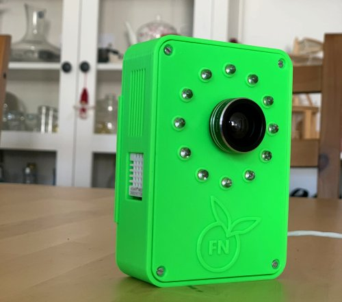
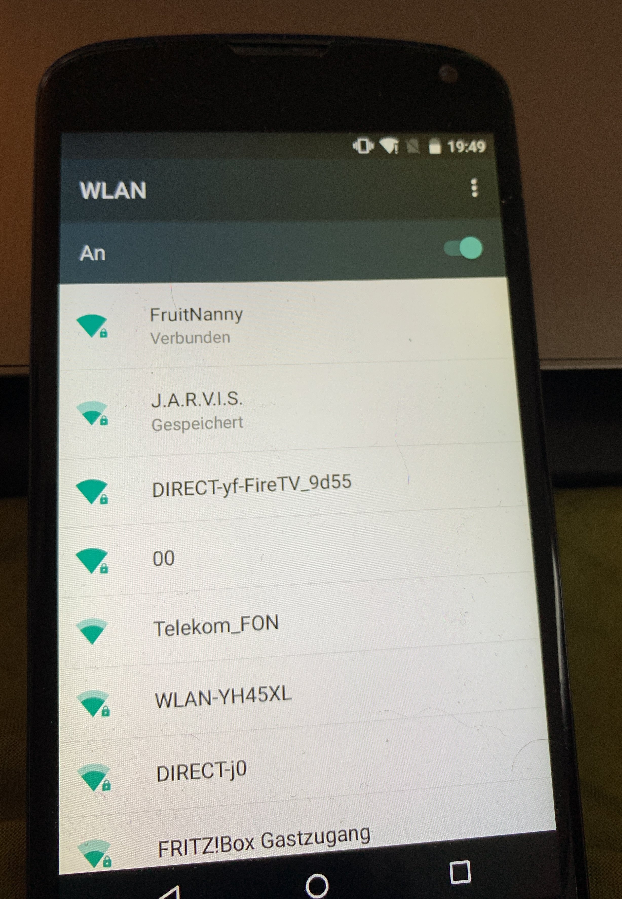
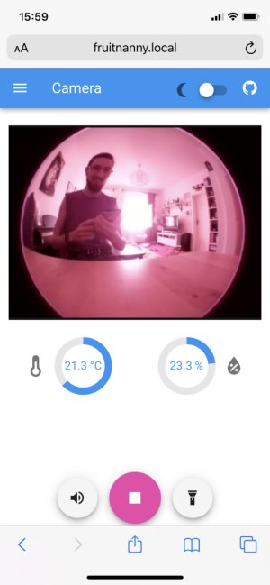
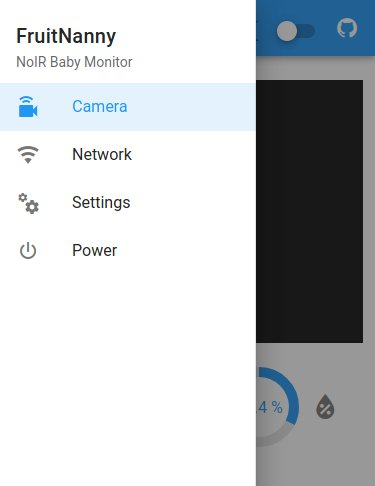

Getting Started
This section describes how to quickly start with the FruitNanny.
The FruitNanny is essentially a Raspberry Pi with a NoIR camera, microphone and environmental sensor. It is accessed by a web UI via WiFi at fruitnanny.local. The web GUI provides WebRTC-based video streaming and WiFi controlling capabilities.

Support Matrix¶
This is a list of platforms and browsers known to work. If your system is not listed here, these are the required technologies:
- mDNS support in order to resolve
*.localdomains in a local network - Browser with WebRTC and H.264 codec support for live video streaming.
| Supported | Platform | Browser | Notes |
|---|---|---|---|
| ✓ | Ubuntu | Firefox, Chromium | Avahi for mDNS support. |
| ✓ | iOS | Safari | |
| ✓ | Android | Firefox Preview | mDNS does not work on Android. Use IP address instead, see this section. |
| ✗ | Android | Firefox | Since version 68 Firefox for Android no longer supports H.264 due to a change in Google Play policy. |
| (?) | Android | Chrome |
On Android WebRTC, H.264 is supported only if:
Currently only Qualcomm and Exynos devices are supported. Any other devices – even if they support H.264 hardware encoder – will not be used and will not be available for WebRTC streams. See here for more information. |
| ✓ | Windows | Chrome | Chrome has built-in support for mDNS. |
| ✗ | Windows | Firefox | Currently, Firefox does not support the new mDNS API of in Windows 10. |
First Steps¶
1. Power¶
Connect the FruitNanny to a 5V microUSB power source. A powerbank should also do the trick and provides mobility. As soon as the FruitNanny is powered, it will boot up.
2. Connect to WiFi Hotspot¶

If the FruitNanny does not find any known WiFi network, it starts its WiFi Hotspot. Its default SSID is FruitNanny. Connect to the WiFi to get access to the web UI.
3. Access Web UI¶

Once you are connected to the hotspot, the web UI can be accessed via http://fruitnanny.local/.
Note
.local are mDNS domain names. The system and/or browser needs to
support this technology. It is a well known issue that mDNS does not work
properly on Android. Please consult the support matrix.
Hit the Play button and you should get a live video. If it is dark, just turn on the infrared light.
Only one device can use the live stream at the same time. See this issue for explanation.
If you want to connect the FruitNanny to your home network instead of using the hotspot, please check the network configuration section.
4. Powering Off¶
The FruitNanny can be turned off via the main menu in the top left corner.

Of course, you could also just unplug the FruitNanny but this should be avoided in order to properly shut down the operating system.